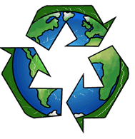
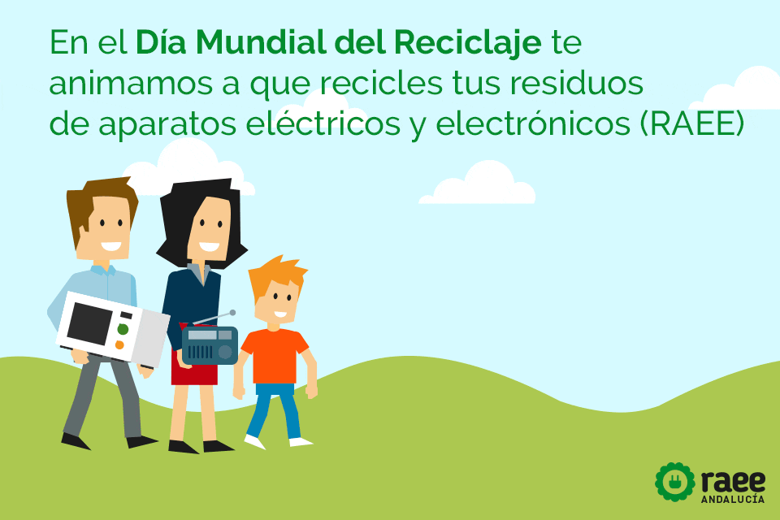
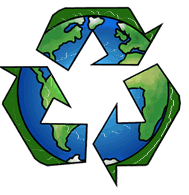
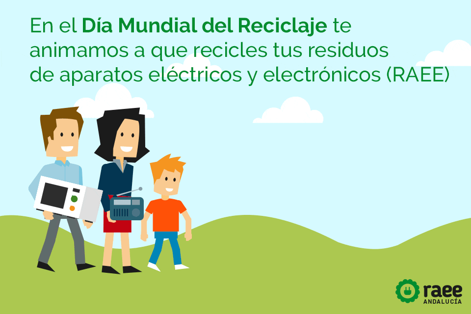

¿Cómo puedes ayudar?
A menudo nos encontramos ante la duda de cómo podemos con nuestro comportamiento influir positivamente en
el desarrollo sostenible, es preciso entender que los problemas que afectan la sostenibilidad no están restringidos a las grandes empresas, de una forma u otra
todos contribuimos con nuestro granito de arena.
Las soluciones a los problemas que afectan el desarrollo sostenible no debe limitarse únicamente a las políticas, estrategias y estándares diseñados y establecidas
en las empresas.
|


 


